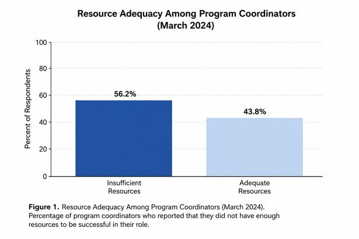
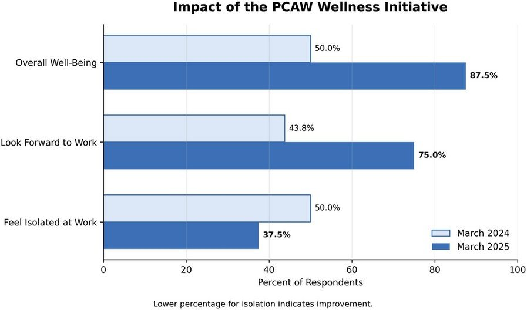

Brief ReportA1
Program Coordinator Well-Being Initiative: A Year in Review
University of South Alabama, AL
- Article type
- Brief Report
- Published
- August 2026
- DOI
10.70785/EKFN3359- Access
- Peer reviewed, open access
Abstract
- Background
- Program coordinators are essential to the success of graduate medical education programs, yet their well-being is often overlooked.
- Objective
- To evaluate whether a low-cost, coordinator-led wellness initiative improves workplace engagement, sense of community, and overall well-being among program coordinators over one year.
- Methods
- In response to survey findings that identified concerns related to workplace resources, isolation, and overall well-being, a coordinator-led wellness initiative was implemented. Coordinators were surveyed in early 2024 and again in early 2025.
- Results
- After one year, participants reported improvements in workplace engagement, sense of community, and overall well-being.
- Conclusions
- These findings suggest that low-cost, coordinator-focused wellness initiatives can positively impact job satisfaction and professional connectedness.
Background
Wellness as an ACGME requirement is a pillar of graduate medical education training. This aspect can often be unincorporated into the work lives of those who make these programs function, the program coordinator. At our institution, there was a palpable sense of isolation, burnout, and poor work-life balance among coordinators that was leading to high turnover, low job satisfaction, and poor employee performance.
Objectives
This report shows a one year evaluation of a multispecialty sample of graduate medical education program coordinators regarding their perceptions of isolation, burnout, and work-life balance. It seeks to show the need for program coordinator specific wellness initiatives and the current and projected success of this wellness initiative within the constraints of little to no budget.
Methods
In early 2024, the authors surveyed program coordinators within residency and fellowship programs concerning their current job relationship. These program coordinators answered questions on various aspects of their work day, job satisfaction, and view of graduate medical education. The index questions for this report asked, “Do you look forward to coming to work most days?” (Yes or No), “Have you ever felt or do you feel isolated at work?” (Yes or No), and “How satisfied or dissatisfied are you in your current role?” (1 for Very dissatisfied to 5 for Very satisfied). Another follow up survey was conducted in early 2025 with similar questions, a few demographics removed, and new questions of the effectiveness of the wellness initiative. Analysis consisted of basic comparative and descriptive statistics.
Results, Outcomes, and Improvements
The initial survey had troubling statistics of poor well-being that confirmed initial observations. 56.2% of coordinators felt they did not have enough resources to be successful in their role. 31.3% said they felt burnt out. One comment specified a need for “more communication/social [aspects] with other coordinators.”

In combination with these results and national data, a year of program coordinator wellness events were planned through a committee founded by the two authors called Program Coordinators Advocating for Wellness (PCAW). Events would occur every other month and during less stressful months in the academic year. Six events took place from March 2024 to November 2024. These initiatives targeted aspects of wellness, had no initial cost associated with them, and utilized existing opportunities within the institution. Two were after-hours dinner events, two were during work hours potluck and lunch gatherings, one was a private yoga session, and one was a group field trip to a local farmer’s market on campus. Food-based events proved to be the most engaged-with type of event with yoga being a close second. Planning for future events will target each aspect of the wellness wheel per event.
The follow-up survey had significant improvements in data. Looking forward to work increased from 43.8% to 75%. Feeling isolated at work decreased from 50% to 37.5%. Overall job satisfaction increased by 18%. Overall well-being increased from 50% to 87.5% following the implementation of wellness initiatives. 100% of our responders said PCAW improved their sense of community with other coordinators, sense of well-being, and work-life balance in GME. One comment said that “[PCAW] really creates a sense of ‘belonging’ for me.” There were some noted variables in data due to job changes.

Conclusion
Wellness needs to be incorporated into graduate medical education offices with program coordinators as the focus. Having activities and events for program coordinators is a way to make sure job retention increases and that the support residents need is consistent. Initiatives need to be cost-effective to ensure replication in other institutions. Further evaluations of this wellness initiative will come at year milestones to showcase longevity and practicality of wellness in the workplace.
Conflict of interest. The author(s) declares no conflict of interest.
How to cite this article
Weindorf B. Program Coordinator Well-Being Initiative: A Year in Review. FULGME. 2026;(3):A1. DOI: 10.70785/EKFN3359
Article Information
- Journal
- FULGME: Forum for United Leaders in Graduate Medical Education
- Publisher
- Forum for United Leaders in Graduate Medical Education
- ISSN
- 3065-582X
- Issue
- 3, August 2026
- Article number
- A1
- Article DOI
- 10.70785/EKFN3359
- Issue DOI
- 10.70785/JJXN8215
- Journal DOI
- 10.70785/IHSN6820
- Access
- Peer reviewed, open access, free to read
- Copyright
- Retained by the author(s)
- Licence
- CC BY-NC-ND 4.0
- Contact
- info@fulgme.org
Copyright and licence. © The author(s). This article is published open access under a Creative Commons Attribution-NonCommercial-NoDerivatives 4.0 International licence (CC BY-NC-ND 4.0). You are free to copy and redistribute it in any medium or format, with attribution to the author(s) and FULGME, provided you do not use it commercially and do not distribute altered versions.